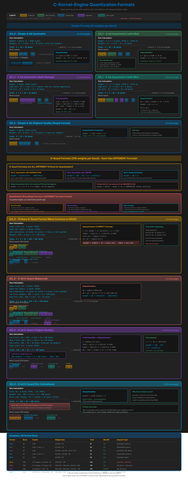
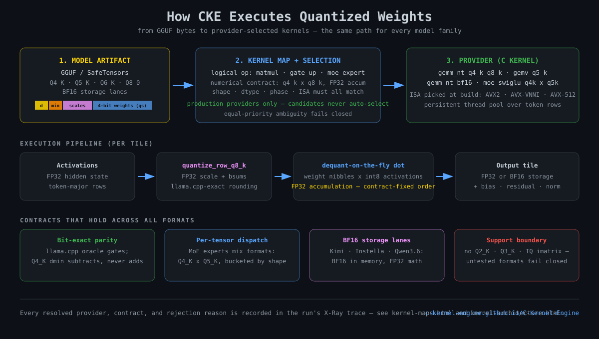

Quantization Formats Visual Guide
Byte-level structure, headers, and dequantization math for the formats CKE executes
Where These Formats Run Today
v8 is the primary engine. All current model families — Gemma 3/4, Qwen 2 / 3 / 3.5 / 3.6 / 3.8, GLM-4, Nemotron, Kimi, Cohere2, Laguna, Instella-MoE, Nanbeige, GPT-2, Qwen3-VL / Qwen3.6-VL vision, and Whisper audio — run as v8 generated runtimes over the GGUF formats below plus first-class BF16 storage. v7 remains the training lane (FP32 forward/backward); its quantized inference path is superseded by v8. The byte layouts are identical in both engines because both are parity-gated against llama.cpp.
Dense GGUF lanes
Q4_K_M, Q5_K_M, and Q8_0 checkpoints across Gemma, Qwen, GLM-4, Nemotron, and Nanbeige. Mixed dispatch: Q4_K/Q5_K/Q6_K weights with Q8_K or Q8_0 quantized activations.
MoE mixed-quant dispatch
Qwen3.5 35B-A3B and Instella-MoE route experts through mixed pairs — Q4_K x Q4_K, Q4_K x Q5_K (bucketed), Q4_K x Q6_K, Q5_0 / Q5_1 with Q8_0 — selected per tensor by the kernel maps.
BF16 as a first-class dtype
Kimi, Instella, and Qwen3.6 lanes run BF16 weights/KV with FP32 accumulation (AVX-512 BF16 / AMX where available, portable rounding elsewhere). Not a GGUF quant — a storage contract.
Format support boundary
Supported: Q4_0, Q4_1, Q5_0, Q5_1, Q8_0, Q4_K, Q5_K, Q6_K, Q8_K, plus NVFP4 (MoE expert weights only, candidate status). One nuance: Q4_0 and Q4_1 have C kernels and dtype IDs but no v8 kernel maps — they remain reachable through legacy v7 bindings only, so no v8 circuit selects them. Q5_K's block struct lives privately in src/kernels/gemm_kernels_q5_k.c rather than in the public header. Not supported: Q2_K, Q3_K, and the IQ imatrix family — the runbook's model table lists tested artifacts per family.
Q4_0
Q4_1
Q5_0
Q5_1
Q8_0
Q4_K (Primary)
Q5_K
Q6_K
Q8_K (Activations)
NVFP4 (MoE-only, candidate)
Complete Format Reference

Click image to open in fullscreen viewer with zoom and pan controls
How CKE Executes These Formats

From GGUF bytes to provider-selected kernels: the same path for every model family. Click to open the fullscreen viewer.
The byte layouts above are the storage format; the diagram shows the execution contract. For the mechanism behind each step:
- Kernel Maps — provider metadata, numerical contracts, equivalence groups
- Kernel Architecture — how maps, lowering, and codegen connect
- Model and Kernel Matrix — which formats each family actually runs
- Quantization Deep Dive — theory and dequantization math
- X-Ray — see which provider ran and why others were rejected
Recipes vs Formats
A GGUF label like Q5_K_M or UD-Q4_K_XL is a recipe — a
per-tensor format assignment — not a single format. The converter records each tensor's actual dtype
in the weights manifest, and the runtime dispatches per tensor: every weight carries its own dtype
through lowering, and the kernel map selects a provider for that dtype's numerical contract. The practical
consequence: a new recipe needs zero new kernels when providers for the constituent formats
already exist — only the assignment changes, not the arithmetic.
One label, four quant formats
The gemma-3-270m-it-Q5_K_M artifact above is really a four-format mix — q5_1, q5_k, q8_0, q6_k
— plus fp32 norms and biases (218 of the 332 weight tensors: tiny, but numerous). Even within a
single layer role the recipe alternates: wv is q8_0 on 9 layers and q5_1 on 9;
w2 is q6_k on 9 and q5_k on 9.
Unsloth UD artifacts (PR #463)
PR #463 tested an Unsloth Gemma3 UD-Q4_K_XL artifact: it is a mixed
Q4_K/Q5_0/Q5_K/Q6_K/Q8_0 recipe, not a distinct UD arithmetic format, and it matched 256/256
complete-vocabulary rows bit-exactly to llama.cpp. The 520-token layer-0 boundary differs at five rows,
so longer-context bit-exact certification remains open.
Run the census yourself
python3 version/v8/tools/open_ir_visualizer_v8.py --generate <model> --html-only
writes ir_report.html into the model cache dir; its Weight Dtype Audit tab
lists the per-tensor dtype breakdown for your own artifacts.
Key Concepts
Block Quantization
Weights are grouped into blocks (32 or 256). Each block has a shared scale factor, reducing overhead while maintaining accuracy. Larger blocks = better compression, smaller blocks = better accuracy.
Symmetric vs Asymmetric
Symmetric (Q4_0, Q5_0, Q8_0): Values centered at 0. Formula: weight = (q - center) x d
Asymmetric (Q4_1, Q5_1): Adds min offset. Formula: weight = q x d + m
Q4_K dmin: SUBTRACT not ADD!
Common Bug: Q4_K uses weight = q x (d x sc) - (dmin x mn)
The minus sign is critical! dmin encodes a positive offset that gets subtracted to shift the range down. Using + instead of - produces wrong outputs.
K-Quant Nested Scales
K-quant formats use 2-level scaling: a super-block FP16 scale multiplied by per-sub-block 6-bit or int8 scales. This gives fine-grained control with minimal overhead.
5-bit and 6-bit Packing
Q5 and Q6 formats split bits across multiple byte arrays. Q5: 4 low bits in qs, 1 high bit in qh. Q6: 4 low bits in ql, 2 high bits in qh.
Q8_K: FP32 Scale + bsums
Q8_K uses FP32 scale (not FP16!) for higher precision. The bsums field contains precomputed sums of 16 consecutive int8s for VNNI/AVX-512 dot product optimization.
Recent Fix: Q8_K SSE Parity
On 2026-03-09 we fixed a subtle Q8_K parity bug in quantize_row_q8_k_sse.c. The SSE path now preserves the same signed-max selection and bsums contract as llama.cpp/ref. See commit 224a4d30.
This class of bug is easy to miss: text generation can still look mostly normal, but mixed-quant boundaries like quantize_row_q8_k -> gemv_q4_k_q8_k accumulate small parity drift until a model family like Nanbeige exposes it.
Quant Summary (current v8 mixed-quant path)
These are the formats that matter in the v8 generated runtimes across Gemma, Qwen (dense, MoE, and hybrid DeltaNet), GLM-4, Nemotron, Kimi, Cohere2, Laguna, Instella-MoE, Nanbeige, and the vision and audio lanes. The practical rule is not just "pick a small dtype", but "pick the weight format and activation contract that match the runtime kernel actually selected by the kernel map." The older v7 quantized inference path used the same byte formats; v7 is now the training lane.
quantize_row_q8_k -> gemv_q4_k_q8_k and gemv_q6_k_q8_k; the same byte contract ran in v7.FP32
quantize_row_q8_k
Q4_K / Q6_K × Q8_K
q8_k activation contract.Related Documentation
- Quantization Deep Dive - Theory and implementation
- Bit Manipulation Visuals - Interactive SVG diagrams
- Kernel Reference - All GEMM kernels
- Model and Kernel Matrix - per-family formats and evidence
- v8 Runbook - tested artifacts and commands
- SIMD Architecture - AVX-512, VNNI, AMX